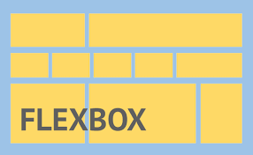

El propósito de este sitio es dinamizar el aprendizaje del tema Flexbox, CSS Grid.
Flexbox
Flexbox es como se llama comúnmente a Módulo de diseño de caja flexible CSS, un modelo de diseño para mostrar elementos en una sola dimensión, como una fila o como una columna.En la especificación, flexbox se describe como un modelo de diseño para la interfaz de usuario. La característica clave de Flexbox es el hecho de que los elementos en un diseño flexible pueden crecer y reducirse. El espacio se puede asignar a los mismos elementos, o distribuidos entre o alrededor de los elementos.Flexbox también permite la alineación de los elementos en el eje principal o transversal, proporcionando así un alto nivel de control sobre el tamaño y la alineación de un grupo de elementos.

CSS Grid
CSS Grid layout contiene funciones de diseño dirigidas a los desarrolladores de aplicaciones web. El CSS grid se puede utilizar para lograr muchos diseños diferentes. También se destaca por permitir dividir una página en áreas o regiones principales, por definir la relación en términos de tamaño, posición y capas entre partes de un control construido a partir de primitivas HTML. Al igual que las tablas, el grid layout permite a un autor alinear elementos en columnas y filas. Sin embargo, con CSS grid son posibles muchos más diseños y de forma más sencilla que con las tablas. Por ejemplo, los elementos secundarios de un contenedor de cuadrícula podrían posicionarse para que se solapen y se superpongan, de forma similar a los elementos posicionados en CSS.